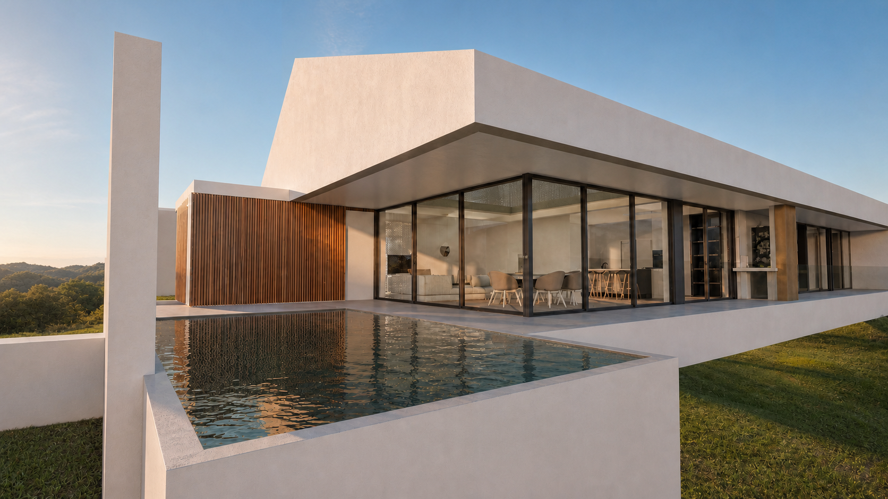
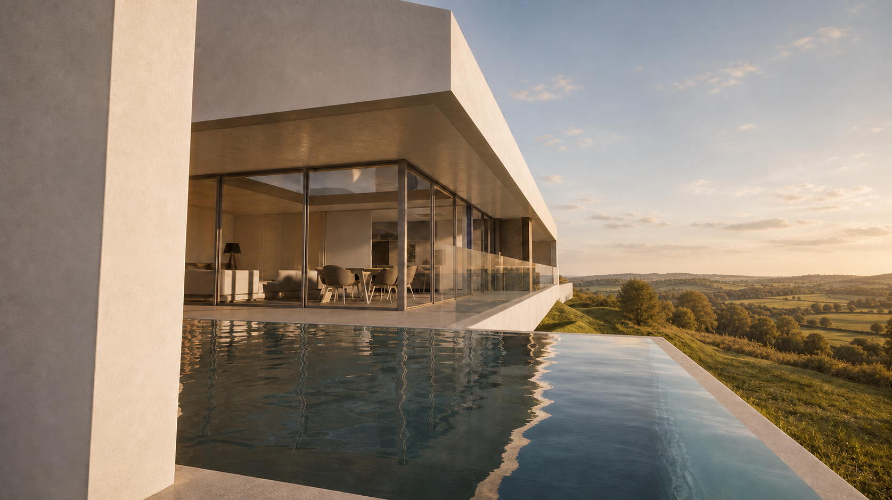
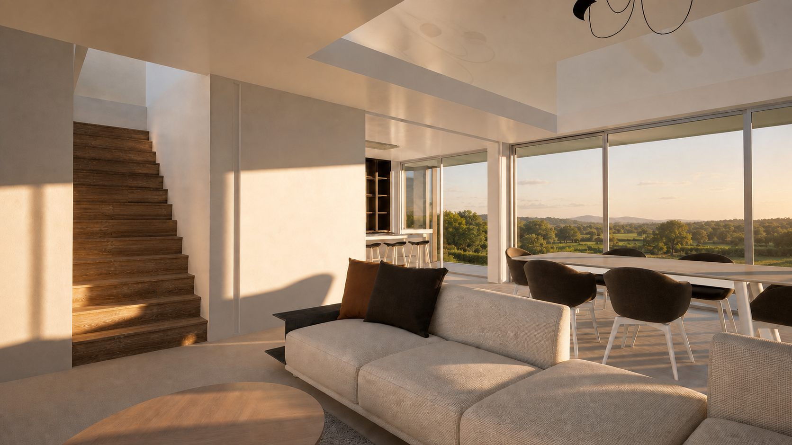

Casa HF · Nine
Arquitetura contemporânea, espaços amplos e relação com a paisagem. Projeto em construção.
Projetos de moradias desenhados para a sua forma de viver, para o seu terreno e para o futuro.
Fale-nos da sua moradia ↗Cada projeto nasce do diálogo entre o lugar, as necessidades de quem o habita e as possibilidades de construção. No JDA STUDIO acompanhamos a definição do conceito, o desenvolvimento da arquitetura, o licenciamento e a articulação com a obra.

Arquitetura contemporânea, espaços amplos e relação com a paisagem. Projeto em construção.
Moradia familiar com espaços de convivência e ligação ao jardim. Obra concluída.
Ver no portefólio ↗

As imagens adicionais dos projetos serão integradas após validação dos ficheiros originais e direitos de publicação.
Compreendemos o programa, o terreno, as expectativas e o investimento disponível.
Desenvolvemos uma proposta arquitetónica coerente, acompanhada das peças necessárias às fases de projeto e licenciamento.
Articulamos o desenvolvimento técnico e o acompanhamento da obra conforme os serviços contratados.
Conte-nos onde pretende construir e em que fase se encontra. Entraremos em contacto para perceber como podemos ajudar.